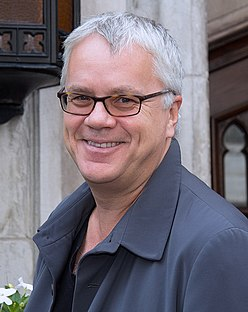
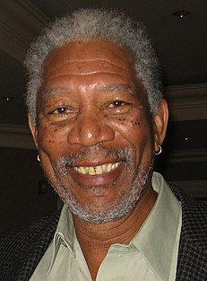
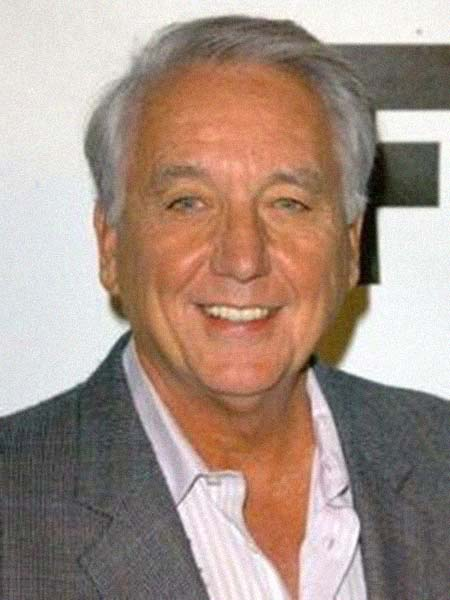

1947年，缅因州波特兰法庭裁定银行家安迪·杜弗伦（Andy Dufresne，蒂姆·罗宾斯饰） 谋杀夫人及其情夫罪名成立，判处两个无期徒刑。进入肖申克州立监狱服刑后， 安迪结识同样被判无期徒刑的埃利斯·“瑞德”·雷丁（Ellis "Red" Redding，摩根·弗里曼饰）， 后者能为狱友走私各种违禁商品，安迪从瑞德手中买到石锤和丽塔·海华丝的巨幅海报。不过，在洗衣房工作的安迪经常遭遇以伯格斯（Bogs）为首的“三姐妹”性侵。
1949年，安迪在做工时听到警卫队长拜伦·哈德利（Byron Hadley）抱怨政府征收的遗产税，于是主动上前提议帮他合法避税。 三姐妹在又一次企图性侵时把安迪打得重伤入院，哈德利出手将伯格斯打成残废。伯格斯随后转送其他监狱，再也没有人敢欺负安迪。 典狱长塞缪尔·诺顿（Samuel Norton，鲍勃·冈顿饰）见过安迪后安排他到监狱图书馆协助老犯人布鲁克斯·哈特伦（Brooks Hatlen）工作， 以此为安迪给包括他在内的监狱工作人员洗钱逃税掩护，甚至还有其他监狱人员慕名而来。工作之余，安迪还坚持每周致信州议会，要求拨款改善老朽的监狱图书馆。
1954年，已服刑50年的布鲁克斯获得假释，但他对外界生活无所适从，最终上吊自杀。州议会给监狱图书馆发来捐赠品， 其中包括《费加罗的婚礼》唱片，安迪打开公共广播并播放咏叹调《微风轻轻吹拂的时光》（Sull'aria...che soave zeffiretto）， 结果受到单独监禁惩罚。事后他告诉其他狱友，单独监禁时他心中充满希望，所以并不难熬，瑞德对此嗤之以鼻。 1963年，诺顿开始动用监狱劳工承包公共工程，利用低廉的用工成本并收受回扣大发横财。安迪向瑞德透露，他洗钱时是用化名“兰德尔·斯蒂芬斯”（Randall Stephens）。
1965年，汤米·威廉姆斯（Tommy Williams）因盗窃入狱并与安迪和瑞德成为朋友，安迪还帮他取得普通教育发展证书。 一年后，汤米告诉安迪和瑞德，之前在其他监狱服刑时曾遇到自称杀死银行家太太和情夫，最终却是银行家顶罪的犯人。 安迪将线索告诉诺顿，但典狱长根本不信，安迪又称出狱也不会泄露洗钱的秘密，愤怒的诺顿又将安迪单独监禁，然后安排哈德利枪杀汤米并伪装成越狱现场。 安迪不想再配合狱方洗钱，但面对诺顿摧毁图书馆、把他扔进环境更恶劣区域并取消警卫保护的威胁被迫让步。两个月的单独监禁结束后，安迪告诉瑞德， 他梦想能在墨西哥沿海小镇锡瓦塔内霍生活，还称他在缅因州约克县巴克斯顿（Buxton, Maine）某处藏有包裹，请瑞德获释后去取。 瑞德觉得安迪行为反常，担心他会自杀，特别是在得知安迪向另一名狱友拿了条近两米的绳子后。
次日早上点名时，警卫发现安迪不在牢房内。愤怒的诺顿将手中石头胡乱砸向周围，其中一颗打中墙上悬挂的拉克尔·韦尔奇海报并穿墙面过， 众人这才发现墙上的大洞及安迪19年来用石锤开挖出来的通道。镜头回到前一天夜晚，安迪洗钱后取走诺顿的西服、皮鞋， 以及证明洗钱犯罪的账本，利用绳子从通道和监狱排污管越狱。警卫和警察搜查期间，他扮成兰德尔·斯蒂芬斯从多家银行共计取走37万美元， 并将账本及肖申克监狱贪污谋杀的其他证据寄到报社。州警赶到监狱逮捕哈德利，诺顿选择吞枪自杀。
一年后，服刑40年的瑞德终获假释。他对外界生活也很不适应，担心会走上布鲁克斯的老路。 但他记得对安迪的承诺，来到巴克斯顿取出包裹，里面留有现金和信件，邀请他前往锡瓦塔内霍。 瑞德违反假释规定来到得克萨斯州哈得斯佩斯县汉考克堡（Fort Hancock），并穿越国境进入墨西哥，电影最后， 他在锡瓦塔内霍的海滩与安迪重逢，两名老友开心相拥。
蒂姆·罗宾斯饰安迪·杜弗伦： 1947年因涉嫌谋杀夫人及其情夫被判无期徒刑的银行家。
摩根·弗里曼饰埃利斯·“瑞德”·雷丁： 安迪的朋友，同样因谋杀被判无期徒刑，有门路向狱友走私违禁商品。
鲍勃·冈顿（Bob Gunton）饰塞缪尔·诺顿： 肖申克监狱典狱长，为人虔诚但又残忍。
《肖申克的救赎》拥有2500万美元预。电影的主体拍摄从1993年6月开始，同年8月结束，耗时三个月。剧组通常每周拍摄六天，每天最多工作18小时。 弗里曼称摄制工作十分紧张，称“演员和导演大部分时候关系紧张，记得我有时候也和导演合不来”。德拉邦特要求部分镜头拍摄多次，但弗里曼觉得其中没有明显区别。 例如安迪首次找上瑞德购买石锤的戏段就花掉九小时拍摄时间，弗里曼接投棒球的桥段也反复当机，以致次日他来到片场时手臂都缠着吊带。 弗里曼有时甚至拒绝拍摄感觉多余的重复镜头。罗宾斯也表示电影摄制过程漫长而艰辛。德拉邦特自认在拍摄本片过程中获益匪浅，“导演心里要有杆秤，清楚如何指示每一位演员”。 在他看来，摄制期间与他分歧最多的是摄影师迪金斯，德拉邦特希望镜头风景优美，但迪金斯觉得应该尽量少拍监狱外的景色，这样可以增强电影的幽闭恐惧感，而且一旦出现广角镜头又能令画面更加震撼。
| 最佳影片 | 马文 |
| 最佳男主角 | 弗里曼 |
| 最佳改编剧本 | 德拉邦特 |
| 最佳摄影 | 迪金斯 |
| 最佳剪辑 | 理查德·弗朗西斯-布鲁斯/td> |
| 最佳音响效果 | 罗伯特·利特、艾略特·泰森、迈克尔·赫比克和威利·D·伯顿 |
| 最佳原创配乐 | 纽曼，首次提名 |